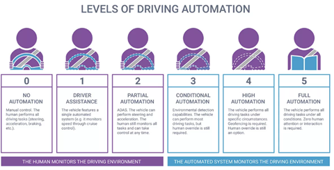

"This article aims to explain what Artificial Intelligence (AI) is and the use of AI in the gaming industry, the motor industry and the finance industry.
It also attempts to explain how important programming is within these industries and other possible uses other than AI.
The article also maps out the advantages of AI in those industries, but also discusses some challenges that may appear when using AI.
Firstly, the article discusses how the gaming industry uses AI to create better experiences for the player, but also for the developer creating their games.
A brief overview of how AI allows for non-playable characters to be more ‘realistic’ in their dialogue or their behaviour giving a much more immersive gameplay for the player or how the developer can
use other programming techniques to create a more realistic environment for the player.
Secondly, this article provides insight as to how AI has been quietly transforming the motor industry through semi-autonomous or fully autonomous vehicles that have yet to be released to the public.
Lastly, the article talks about how AI and programming is changing the financial sector and how large banks,
or other financial institutions are using it to their advantage, but also to effectively combat financial crime."
Introduction
"What is Artificial Intelligence?
Artificial Intelligence (AI) is ‘the science of making computers do things that require intelligence when done by humans’ Ostmann, Florian; Dorobantu, Cosmina (2021) ‘AI in Financial Services’.,
in simpler terms: the ability to make a computer perform tasks that would normally require human intelligence to do so.
AI can be categorized into multiple types; however, we will be mainly focusing on ‘Symbolic AI’ and ‘Statistical AI’.
Symbolic AI: This type of AI ‘relies on translating human knowledge and logical statements into programmed rules’ Ostmann, Florian; Dorobantu, Cosmina (2021) ‘AI in Financial Services’..
Essentially, what this means is that this type of AI will typically have hard programmed rules that are based of already known human knowledge.
An example of symbolic AI would be early programmes of chess bots; these bots would be coded with chess rules that they would follow and find the best next possible moves through the coded rules.
Another example of symbolic AI would be automated bots that may detect suspicious activities, for example: ‘if a person makes multiple large financial transactions, then flag it for human review’.
Statistical AI: This type of AI is built of off ‘data-driven systems’ Ostmann, Florian; Dorobantu, Cosmina (2021) ‘AI in Financial Services’..
What this means is that these AI systems are built of off analysis of data collected by the programme, by playing it itself millions of times with the assistance of machine learning algorithms.
An example of such programme would be AlphaZero, a programme created by Google to become a master at Chess, Go and Shogi."
AI within the Games Industry
"AI within the games industry has been used since the birth of video games. One of the very first games; Space Invaders used artificial intelligence, although it was very basic,
the use of AI was to simulate pre-programmed moves of the aliens. BigCloud.global .
Due to the massive success of Space Invaders (the video game had grossed over $3.8 billion by 1982 Den of Geek.com (2018)), it set the tone for the use of AI in video games for the coming decades.
Overtime, as more video games were released, the use of AI and how complex it was would rise drastically.
We can see this development of AI in fighting games like Tekken or Mortal Combat.
At first the AI had a low skill ceiling compared to human players, however overtime as computers became more powerful,
this skill level of AI increased at a much faster rate than human players, eventually peaking at the point of ‘Perfect Play’.
However, that really was not the case, the AI was not programmed to play perfectly, but to not take any ‘unsafe’ actions, mainly popularized by Mortal Kombat. Tvtropes.org.
This was done to give the player a training tool, but also to test their skill level, as it was in theory possible to beat the AI with certain strategies.
Fighting games were not the only ones to take advantage of the development of AI, open world games are the ones that really took advantage.
How? The developers of these games mainly used AI to create non-playable characters (NPC’s) that would fill their game and create a dynamic living world for the player to be in.
Also, the developers used AI to build their worlds through procedurally generated worlds, generating other assets like textures, props, music and more.appinventiv(2023).
One of the more recent games to take advantage of AI use for NPC’s is ProjektRed’s Cyberpunk 2077.
ProjektRed managed to create a city that is bustling with life due to how many NPC’s there are within the game.
Each NPC has their own story, motive and most of them the player can interact with them in a certain way which can lead to new quests, stories and experiences for the player to enjoy.
Overall, the power of AI in video games is greatly utilized and is only becoming more useful and powerful as a tool for developers to create better gaming experiences for the masses."
AI in Cars
"Artificial Intelligence has started to emerge in cars mainly since the early 2010’s as that was the time when Tesla started to become more widely known and popular among the general population.
Although the idea of using AI in cars can be traced back to late 1900’s the implementation of it was not really accepted until the success of Tesla.
How is AI used in cars? AI is used to power many systems in cars in modern times,
mainly to power cruise-control or self-driving modes, that allow the driver to set a destination or a set speed that the car will follow.
Other uses of it is for parking censors or an automatic parking mode, detecting dangers that the driver may not see or realise causing the car to brake by itself for safety of the driver,
but mainly is used to ‘power two Advance Driver Assistance Systems (ADAS) that every driver knows very well,
Anti-locking Braking System (ABS) and Electronic Stability Control (ESC) or (Electronic stability programme (ESP))’. Josep Aulinas, Hanky Sjafrie ‘AI for Cars’ (2022).
But has how it evolved? With automatic parking, AI ‘has evolved from purely informational to fully automatic systems. Where the early versions of such systems could only visualize
the rear environment of the vehicle with the help of a rear-view camera, modern automatic parking systems park and unpark the vehicle autonomously without
requiring human inside the vehicle’.Josep Aulinas, Hanky Sjafrie ‘AI for Cars’ (2022).
That is not the only evolution taking place, the main evolution is taking place within the self-driving aspect of the cars.
Steadily ‘over past years, advancements in AI have allowed for substantial developments in autonomous driving. As a result,
moving to Level-4 and Level-5 autonomy soon looks like a certain possiblity.’Vasile Palade,Ankur Deo ‘International Journal of Artificial Intelligence Tools’ (2022).
Level-4 and Level-5 autonomy refer to a level system of how autonomous a car is."
